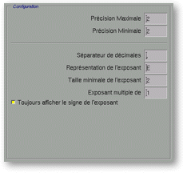
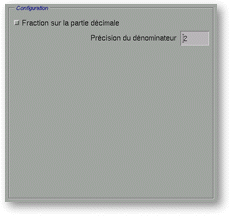

<!-- Documentation XQuad (c)1995-2000 AXENE contact axene@axene.org>
<html>

<head>
<title>Numeric Format: Display</title>
</head>

<body BGCOLOR="#FFFFFF" BACKGROUND="Images/back.gif" TEXT="#000000">

<p ALIGN="right">  </p>

<p align="center"><br>
</p>

<h2 align="center">Format display configuration</h2>

<p>When you select the &quot;<i>Display</i>&quot; button in the horizontal bar (upper
right portion of the 'Numeric Format' dialog box), the &quot;<i>Configuration</i>&quot;
section is different in accordance with the format type.<br>
<br>
</p>

<hr>

<p><br>
</p>
<a NAME="bnf_display_1">

<h3>Format: Number, Unit, Percentage</h3>
</a>

<p>If the format type is &quot;<i>Numbers</i>&quot;, &quot;<i>Units</i>&quot;, or &quot;<i>Percentages</i>&quot;,
the &quot;<i>Configuration</i>&quot; section looks like:</p>

<p align="center"> <br>
<small><i>Screen snap: &quot;Configuration&quot; section</i></small></p>

<p>This section is composed, from top to bottom, by: 

<ul>
  <li><a NAME="button_truncate">The &quot;<i>Truncate decimal when drawing</i>&quot; button
    activates <b>displaying of as much decimals as the cell width can allow</b>. Thus if the
    cell is wider and this option is activated, the number is displayed with more decimals. If
    this option is not activated and the cell is not wide enough to display all the decimals
    from the number, some '#' characters are displayed instead. If the format type is &quot;<i>Units</i>&quot;
    or &quot;<i>Percentages</i>&quot;, this option is not available and the button is
    disabled.</a><br>
    &nbsp;</li>
  <li><a NAME="textfield_max_prec">The &quot;<i>Maximum Precision</i>&quot; text field <b>selects
    the maximum number of decimals</b> to be displayed. The value must be between the &quot;<i>Minimum
    Precision</i>&quot; and 20.</a><br>
    &nbsp;</li>
  <li><a NAME="textfield_min_prec">The &quot;<i>Minimum Precision</i>&quot; text field <b>selects
    the minimum number of decimals</b> to be displayed. The value must be between 0 and the
    &quot;<i>Maximum Precision</i>. When a cell is not wide enough to display the minimum
    number of decimals, some '#' characters are displayed instead. If the number have less
    decimal than the minimum precision, some zeroes are appended.</a><br>
    &nbsp;</li>
  <li><a NAME="textfield_sep_string">The &quot;<i>Decimal Separator</i>&quot; text field <b>selects
    the character which marks the separation between the integer part and the decimal part of
    the number</b>. In English, the integer part and the decimal part is usually separated by
    a point. Only one separator character is allowed.</a><br>
    &nbsp;</li>
  <li><a NAME="textfield_sep_mstring">The &quot;<i>Thousands Separator</i>&quot; text field <b>selects
    the character which marks the separations in the integer part of big numbers</b> to make
    the reading easier. In English, big integer numbers are usually cut out in comma-separated
    groups of three. Only one separator character is allowed.</a><br>
    &nbsp;</li>
  <li><a NAME="textfield_sep_position">The &quot;<i>Separator every</i>&quot; text <b>field
    selects the number of digit for a group in the integer part of the number</b>. Most values
    are 3 and 0 (deactivate grouping). The value must be between 0 and 20.</a></li>
</ul>

<p><br>
<br>
</p>

<hr>

<p><br>
</p>
<a NAME="bnf_display_2">

<h3>Format: Scientific</h3>
</a>

<p>If the format type is &quot;<i>Scientific</i>&quot;, the &quot;<i>Configuration</i>&quot;
section looks like:</p>

<p align="center"> <br>
<small><i>Screen snap: &quot;Configuration&quot; section</i></small></p>

<p>This section is composed, from top to bottom, by: 

<ul>
  <li><a NAME="textfield_max_prec2">The &quot;<i>Maximum Precision</i>&quot; text field <b>selects
    the maximum number of decimals</b> to be displayed. The value must be between the &quot;<i>Minimum
    Precision</i>&quot; and 20.</a><br>
    &nbsp;</li>
  <li><a NAME="textfield_min_prec2">The &quot;<i>Minimum Precision</i>&quot; text field <b>selects
    the minimum number of decimals</b> to be displayed. The value must be between 0 and the
    &quot;<i>Maximum Precision</i>. When a cell is not wide enough to display the minimum
    number of decimals, some '#' characters are displayed instead. If the number have less
    decimal than the minimum precision, some zeroes are appended.</a><br>
    &nbsp;</li>
  <li><a NAME="textfield_sep_string2">The &quot;<i>Decimal Separator</i>&quot; text field <b>selects
    the character which marks the separation between the integer part and the decimal part of
    the number</b>. In English, the integer part and the decimal part is usually separated by
    a point. Only one separator character is allowed.</a><br>
    &nbsp;</li>
  <li><a NAME="textfield_sep_estring">The &quot;<i>Exponent symbol</i>&quot; text field<b>
    selects the character which marks the separation between the mantissa and the exponent</b>.
    The usual values are 'E' or 'e'. The value can have more than one character.</a><br>
    &nbsp;</li>
  <li><a NAME="textfield_exp_prec">The &quot;<i>Minimum exponent size</i>&quot; text field<b>
    selects the minimum number of digits displayed for the exponent</b>. If the exponent has
    less digits, zeroes are appended. The value must be between 0 and 10. A zero value allows
    to not display null exponents.</a><br>
    &nbsp;</li>
  <li><a NAME="textfield_exp_multiple">The &quot;<i>Exponent multiple of</i>&quot; text field <b>selects
    the number which the exponent must be multiple of</b>. The displayed exponent is the
    closest to the real exponent as the mantissa is not null. The value must be between 1 and
    20. A value of 1 deactivates this option.</a><br>
    &nbsp;</li>
  <li><a NAME="button_exp_sign">The &quot;<i>Always display exponent sign</i>&quot; <b>button
    selects if a '+' sign is displayed in front of positive exponents</b>. When this option is
    activated, the exponent's sign is always displayed in front of it</a></li>
</ul>

<p><br>
<br>
</p>

<hr>

<p><br>
</p>
<a NAME="bnf_display_3">

<h3>Format: Fraction</h3>
</a>

<p>If the format type is &quot;<i>Fraction</i>&quot;, the &quot;<i>Configuration</i>&quot;
section looks like:</p>

<p align="center"> <br>
<small><i>Screen snap: &quot;Configuration&quot; section</i></small></p>

<p>This section is composed, from top to bottom, by: 

<ul>
  <li><a NAME="button_frac_decimal">The &quot;<i>Fraction of the decimal part</i>&quot; <b>button
    selects if the integer part of the number is displayed or not as a fraction</b>. For
    example: 3.416 is displayed as <tt>'3 5/12'</tt> when activated and as <tt>'41/12'</tt>
    when not activated.</a><br>
    &nbsp;</li>
  <li><a NAME="textfield_frac_prec">The &quot;<i>Denominator Precision</i>&quot; text <b>field
    selects the maximum number of digits for the faction denominator</b>. The value must be
    between 1 and 20. For example, the PI number (=3.14159265358...) is displayed as <tt>'22/7'</tt>
    when the value is 2, and as <tt>'355/113'</tt> when the value is 3.</a></li>
</ul>

<p><br>
</p>

<hr>

<p ALIGN="right"></p>
</body>
</html>
